Where it started
I had always enjoyed indoor RC helicopters and wanted to get into larger outdoor RC planes, but they were very expensive for something that would be destroyed in a crash. This led to the discovery of Flite Test plane plans, where you would buy foam board sheets, print sheets of paper with the plans on, and pin them to the foam board. This allows for the plans to be scribed onto the foam board, and cut out using a craft knife. The parts could then be assembled using a hot glue gun. This meant the electronics were only purchased once, and if the airframe structure was severely damaged in a crash, the actual cost of new foam board to replace it was low, you just needed to manufacture it again.
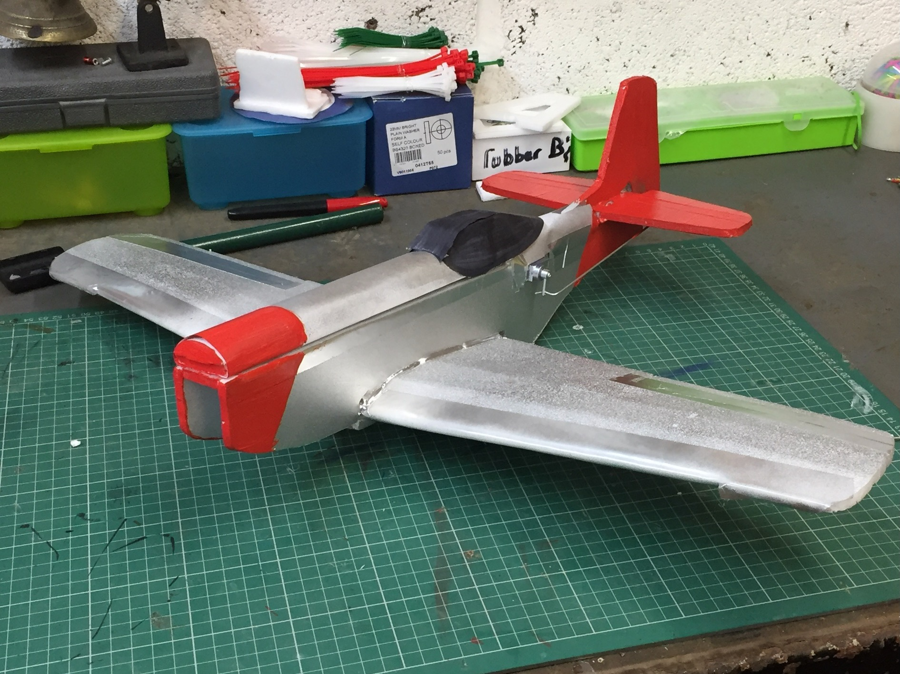
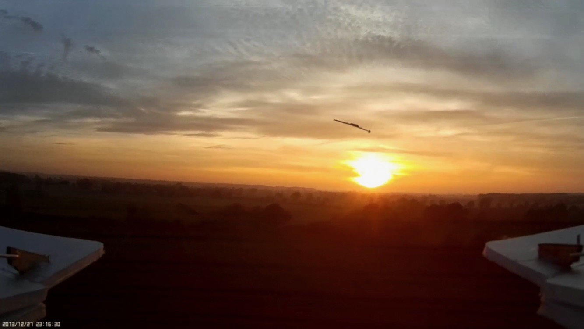
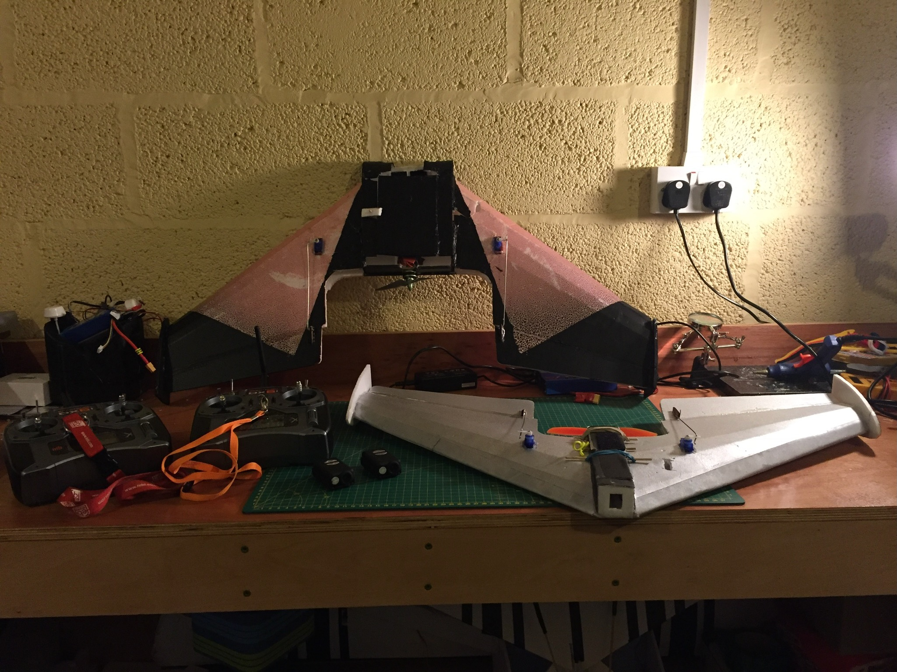
Discovery of acro freestyle quadcopters and FPV
From being in the rc plane field, I came across videos from the likes of JohnnyFPV, MrSteele and Rotor Riot. I was hooked, but also intrigued. I had only seen photography drones before, and so what was this type of drone performing these acrobatic maneuvers? How were they flying them? What were the goggles they were wearing? Turns out these are freestyle racing drones, flown via a live first person view (FPV) feed, to screens in goggles. I wanted to replicate what these guys were doing, and so an objective was formed - build and fly FPV freestyle racing drones, that could carry a GoPro to film and potentially make videos.
What I wanted to build
So I started researching more into what an FPV racing drone was. The general optimal formula is a high trust, low weight, manual acrobatic control, agile quadcopter. The combination of this, and the pilot flying FPV using a live video feed, allows for the capability of some really unique flying and subsequent footage. The drone consists of a carbon fibre frame, 4 motors & propellers, 4 electronic speed controllers (ESCs), a flight controller, battery, camera, video transmitter (VTX) and antenna, radio receiver (RX) and antenna. Then there is a radio control transmitter, and video receiver & antenna, connected to a screen / goggles.
My First Build
The setup that the people making the videos were running was very expensive, and so for my first drone I set out to build one for as cheap as possible, just so I could experience flying these drones FPV and see if it was something I wanted to get more seriously into. To aid in this saving I used my current FPV system, radio transmitter and action camera.
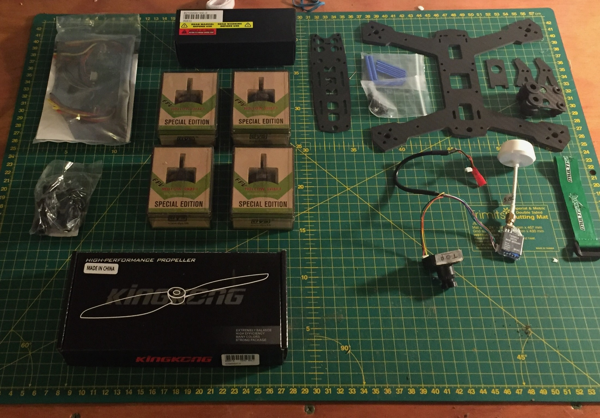
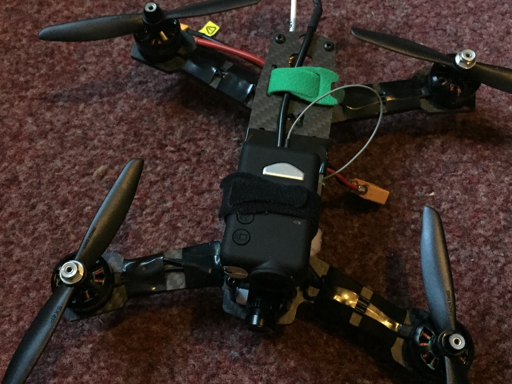
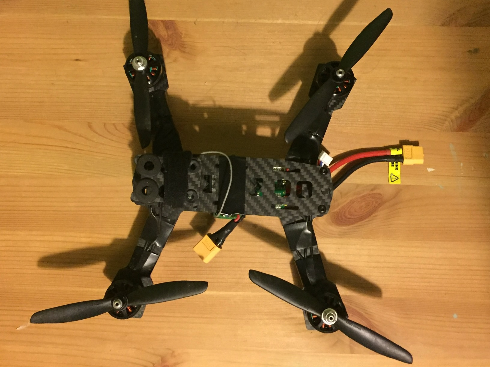
Frame: MRM 225 Motors: DYS SE 2205 2300kv ESCs Afro ESC 4in1 with built in CC3d FC Battery: Multistar 3s 65c Propellers KingKong Multirotor 4x5
There were fundamental issues with this drone, the FPV camera had a really low field of view, limiting vision and making it really difficult to fly. As shown in the picture the FPV system was independent, plugging into the battery for power, and so no on screen display (OSD) of important data was displayed to the goggles. The goggles were bulky and used a singular screen, with an external receiver, which made it really uncomfortable to fly using them. In addition, the combination of a 3s battery and 2 blade propellers delivered a lack of power and agility. Despite these, the drone served its purpose, as I really enjoyed the experience of flying it using the FPV system. So I set out to make an upgraded drone.
Second Build
The FPV system needed an overhaul, and so I purchased some Fatshark Dominator HD2 goggles, which have 2 independent screens and diopters for each eye, providing a much better quality picture, in a much smaller form factor. This allowed for both less eye and neck strain, and eliminated any light leak, allowing for a much more comfortable experience flying. The receiver they host also has two antenna connectors, allowing for the use of both an omni directional, and directional antenna. This improved the range of video signal.
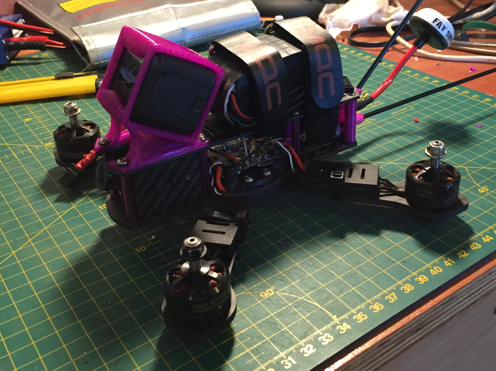
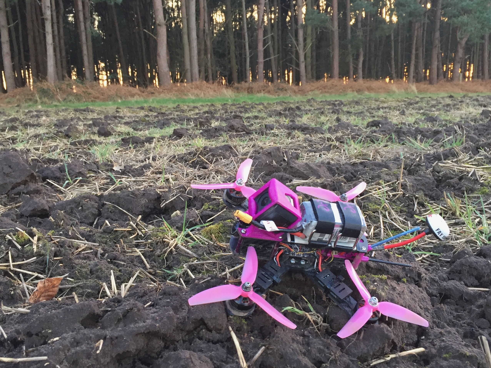
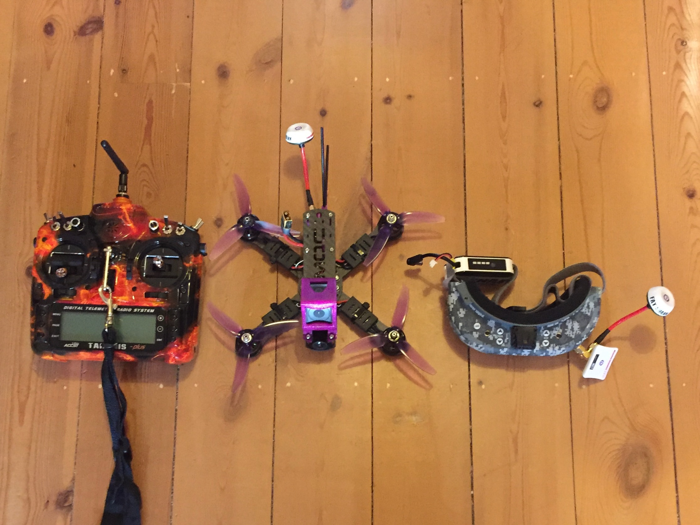
Frame: MQC Fusion Motors: DYS SE 2205 2300kv ESCs DYS XSD 30A FC DYS F4 Pro OSD Battery: TATTU 1550MAH 14.8V 4S 75C Propellers HQ 5x4.3x3
Overall the setup of this drone was performing great, but I was still using the motors from my first drone, and their performance was degrading, and so I wanted a more powerful, smoother set of motors. So I upgraded to a set of T-Motor F40 Pro IIs. A new set of motors produced less vibrations, and they were higher Kv(2400 from 2300), and so provided higher RPMs and thus more power. (2306 from 2205) also upgraded to a TBS Triumph VTX antenna, due to damage to the fatshark one. These antennas have to be exposed to provide the best signal, but this makes them vulnerable in the event of a crash.
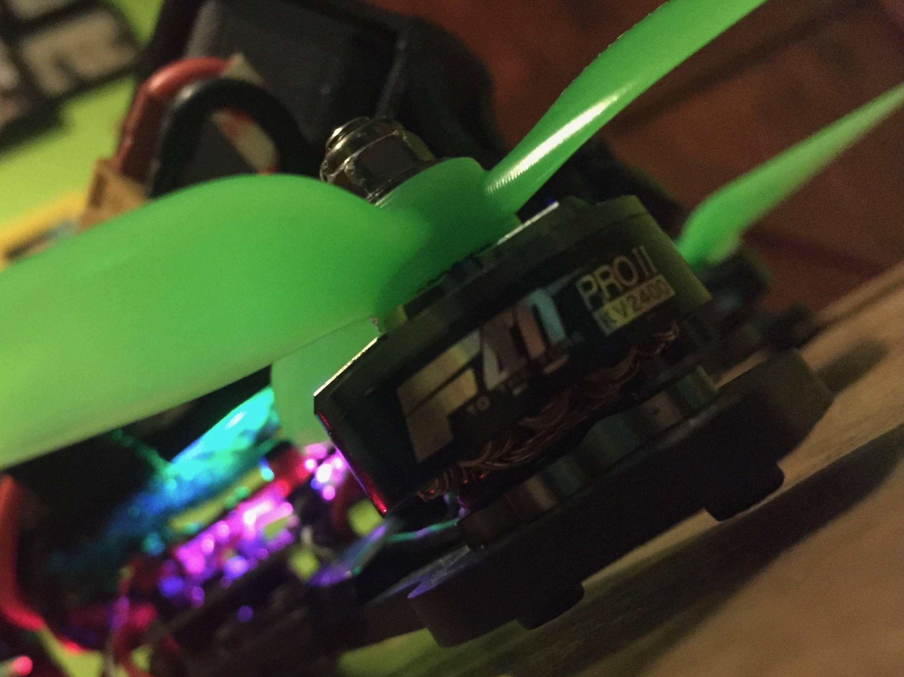
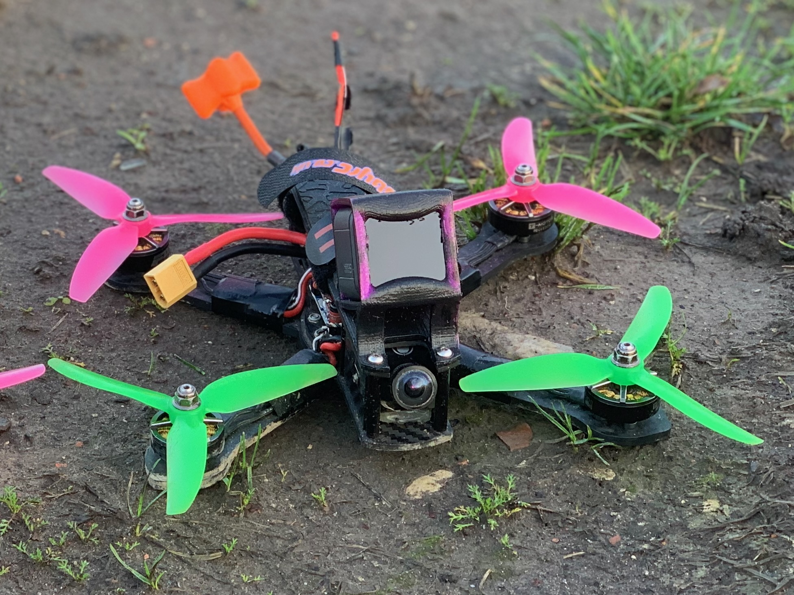

PID Control & Filtering
Now that I had advanced from the objective of building a working drone and learning the basics of flying, to flying around objects and filming HD footage, the smoothness and handling of the drone became very important. Of course the quality of components such as the frame and motors, as well as pilot inputs have a large impact on smoothness, but one of the main factors is the PID control tune and filtering of the flight controller. There are different brands of flight controllers, different softwares, and different software versions - so finding the right combination that gives the best performance while having the right feel is an ever present challenge. The DYS FC initially used on this build was running betaflight, but I then changed to a flightone FC running raceflight, then I changed to a Helio FC running butterflight.
Racer Build
My freestyle rig was going well, but I had come across videos of people flying dedicated racing drones. And due to my upgrades, I had a set of motors, and a flight controller lying around. This inspired me and my cousin to build 2 racing drones to race each other.
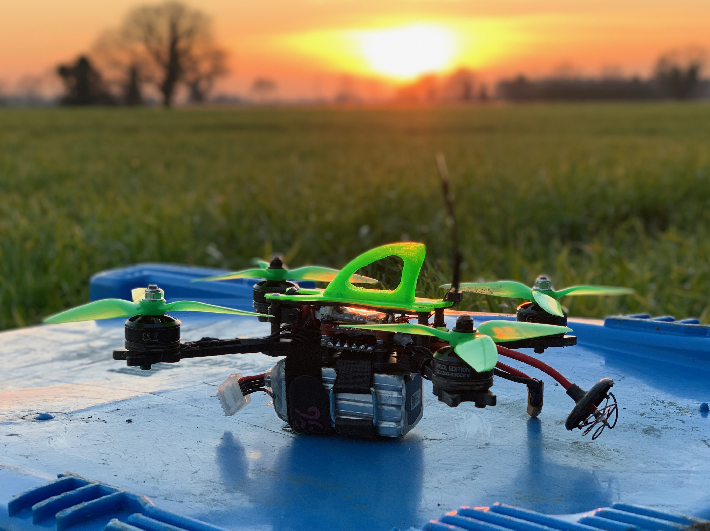
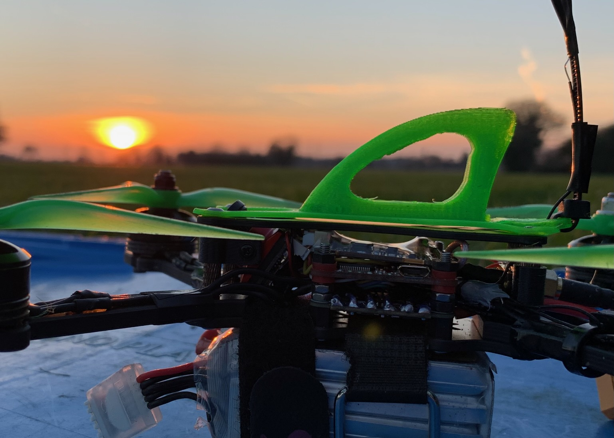
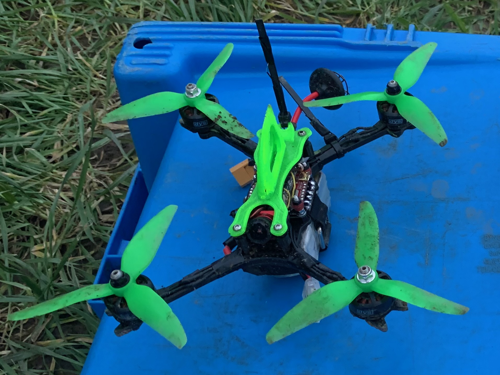
Frame: Mode 2 ghost Motors: DYS SE 2205 2300kv ESCs Spedix GS35 4 in 1 Esc 35A BLHeli 32 FC flightone Battery: TATTU 1550MAH 14.8V 4S 75C Propellers HQ 5x4.5x3
Third fresstyle Build
The second freestyle drone was a monumental improvement from the first, but I wanted to improve its performance. A key factor to performance is trust to weight ratio, and so I wanted to build a lighter, more powerful drone.
I upgraded the motors to ones with a higher Kv (2700Kv), but if the voltage is constant and Kv increased, the amp draw will be increased, and so I upgraded to a 60amp ESC. I chose a 4in1 ESC for multiple reasons, firstly weight saving, secondly the arms on the frame were really thin, and thirdly I had used one on the race drone and was impressed by this form factor. The frame was lighter, utilising thinner bottom and top plates, and much thinner width arms (but thicker depth), and generally being a more compact design. The 3D printed antenna mount was also replaced with a lighter moulded one. A lighter micro eagle runcam analogue camera was chosen, and I was very impressed with this on the racer drone. A new FlightOne RevoltOSD flight controller was chosen. This frame did come with a moulded mount for a GoPro, but it was bulky, at the wrong angle, and I wanted to start using an ND filter - So this was the start of 3D printing GoPro mounts.
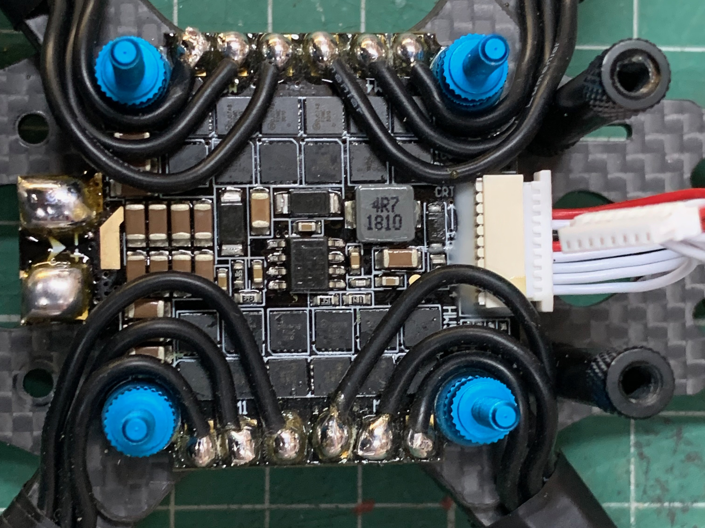
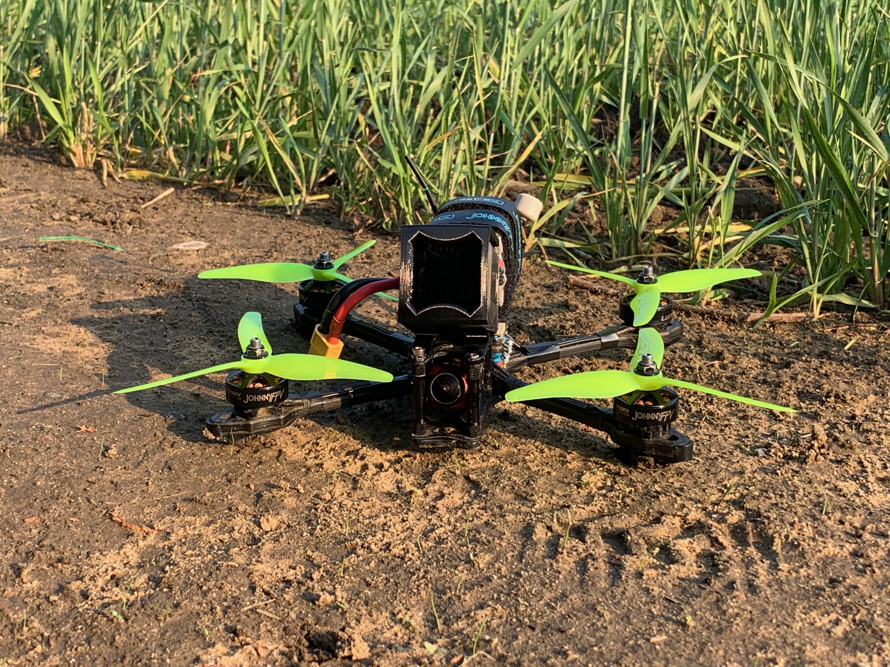
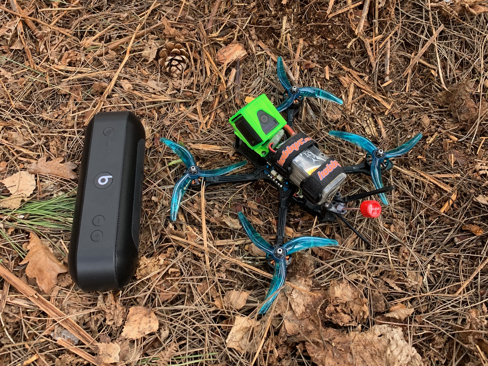
Frame: AstroX X5 Johnnyfpv edition Motors: Lumenier 2207 2700kv Johnnyfpv V2 ESCs Hobbywing XRotor Micro 60A 4in1 FC Flightone RevoltOSD Battery: TATTU 1550MAH 14.8V 4S 75C Propellers Ethix S5 5x4x3 / Azure 4.8x3.8x3
3D Printed GoPro mounts
Why did I need one? - Previous frames had come with mounts, but this one didn't (or it wasn't the correct angle or allow for ND filters). And so needed a mount that could be at the same angle that I liked to run my analogue camera at, and also have space to fit both the GoPro, and a glass ND filter in front of it. We were flying a GoPro session, and unlike the larger GoPros, the ND filters didn't click onto the front, and so the only option were ones that stuck, but then you could only ever use 1 strength of ND filter, or just glass ones, but they needed some way to be attached. So the objective was GoPro mount at a specific angle, designed to hold both the camera and ND filter securely.
Testing 6s batteries
At this time there was a general trend from using 4s to 6s batteries in the industry. For the main reason of battery sag. As power = Current x Voltage. Using a higher voltage battery will provide the same power at a lower current. This means the rig runs cooler and suffers less battery sag at high throttle. Battery sag is when at high current draw the internal resistance causes voltage to drop, causing a temporary loss of performance that recovers when throttle is reduced. As 6s draws less amps, less energy is wasted as heat, and as the starting voltage is higher, a temporary drop in voltage will feel less noticeable on performance. Both these mean 6s suffers less sag, and provides similar performance throughout the entire flight.
Because 6s is a higher voltage, you need to have lower Kv motors to achieve the same RPM. But to test out using 6s batteries before buying new motors, I used a setting on the flight controller that could effectively limit the Kv of the current motors. However, I hadn't accounted for the increased energy spikes, and so at low throttle the drone flew fine, but at higher throttle the voltage spikes exceeded what the capacitor was capable of absorbing, which fried the MOSFETs on the ESC. Due to the higher voltage of 6s, and the larger energy spikes and harsher electrical noise, both the voltage rating and capacitance of the capacitor needs to be increased.
From theoretical advantages, online reviews and videos, and the testing I had managed to do, I was impressed by 6s batteries. So I bought a new ESC, a higher voltage and capacitance capacitor, and a few 6s batteries. The flight controller setting to limit the motor KV was working smoothly, so I didn't need to purchase new motors.
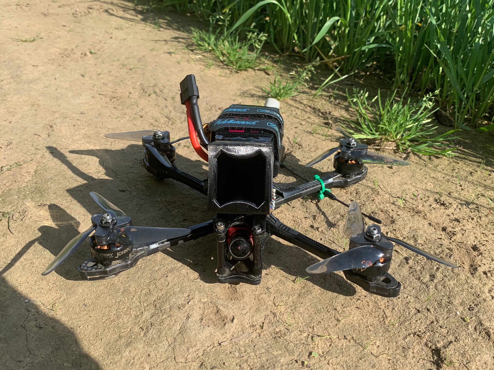
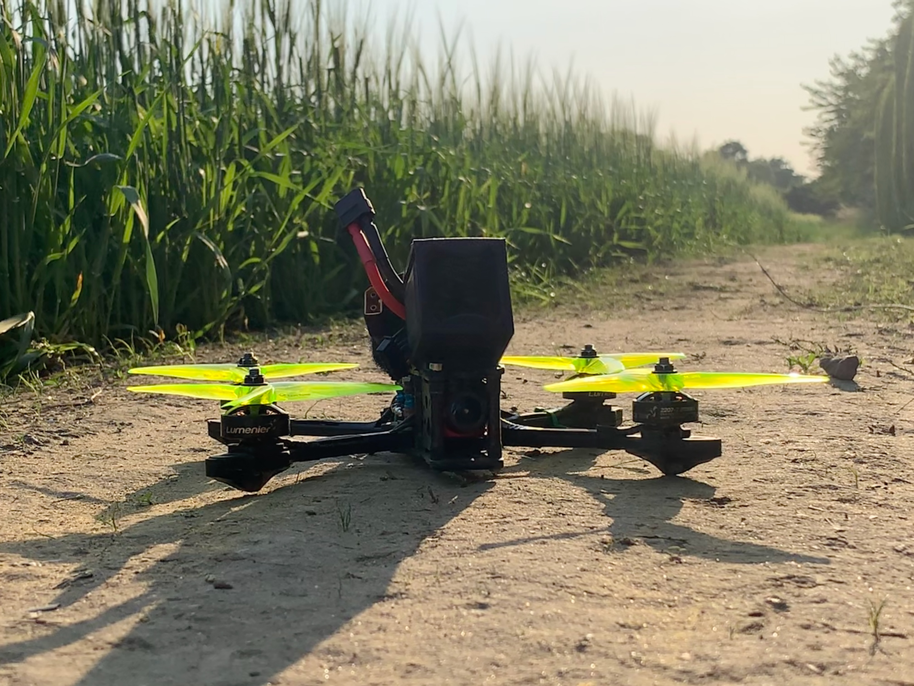
Fourth freestyle Build (new frame)
The third freestyle build was again a large improvement in performance from the second one, with weight saving, increased power, and smoother flight. Then the upgrade to using 6s was another leap in performance, and using the TBS crossfire radio system improved range.
But although performance was improved, the build wasn't fundamentally designed around using these new components. The only components still being used from the initial design were the FPV camera and flight controller. The 6s batteries were larger and heavier than the 4s ones, the new capacitors were larger, and the new VTX was larger. This meant that the layout of the components in the rear was messy, and there were concerns about the strength of the top plate.
This highlighted a design choice that needs to be made. Do you try to optimise purely around weight saving, or also factor in things such as ease of use and durability? For example the previous frame's rear section tapered in, which saved weight, but made it really difficult to secure the VTX, RX and capacitor.
So I decided to put all of the components on a new frame, which was slightly larger. Two main parts of this were the increased space in the rear section, to more securely mount the VTX, RX and capacitor, and a larger top plate, for more secure mounting of the battery. The frame also has specific slots to mount capacitors, more durable front standoffs, a raised plate to reduce oscillations to the GoPro, and a split bottom plate which allows for easier replacement of arms.
So the design choice I made was to not purely optimise for weight, in order to have a securely mounted, durable setup, for smooth flying and video footage. There is also a case that depending on the flying style you want to have, a heavier drone will carry more momentum when off power, and so if this is advantageous there is no trade off to a heavier build. But if I also wanted a really lightweight build, the vision was to put a new set of really smooth motors on this heavier rig, and then use the previous frame and current motors to build a lightweight 6s drone.
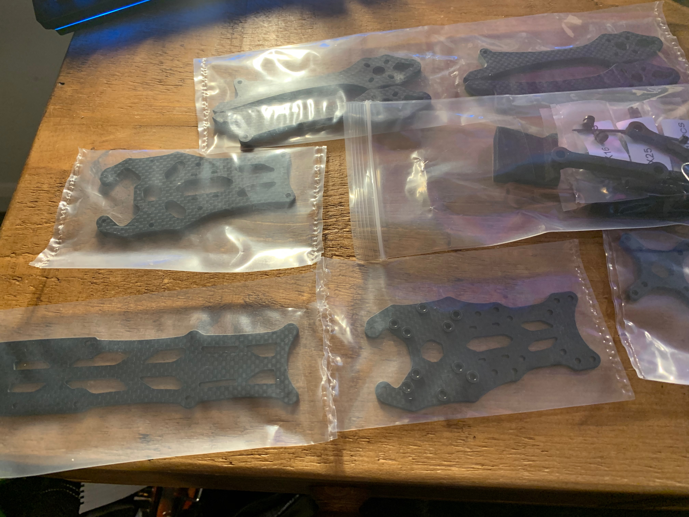
Lessons from extensive flight testing
Read about my other project
Terramechanics Tyre Model
My Final Year Project which first explored off-road terrains response to forces. Based on understanding this relationship, I implemented this phenomena into a tyre-terrain model.
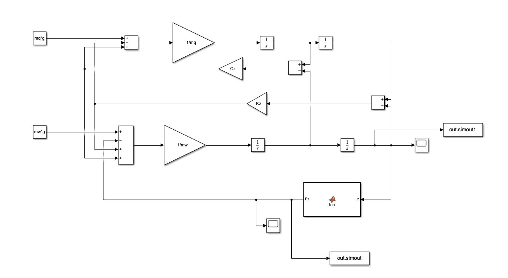